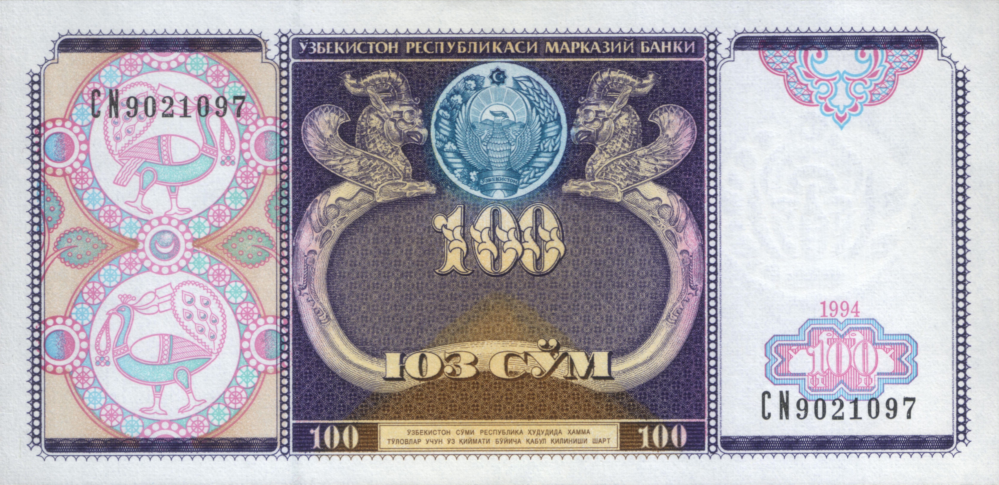

Uzbekistan's national currency: the introduction of the som (1993–1994)
Leaving the ruble zone after independence, the introduction of the sum-coupon on 15 November 1993, and the launch of the national currency — the som — on 1 July 1994. With dates, figures and official sources: the history of a milestone of economic sovereignty.

The som — Uzbekistan's national currency — was introduced into circulation on 1 July 1994. Before it, a transitional sum-coupon had been introduced on 15 November 1993. Having its own currency was one of the key milestones of economic sovereignty following the independence declared on 31 August 1991. This article sets out that process with dates, based on official and reputable sources.
Background: leaving the ruble zone
After independence (31 August 1991), Uzbekistan initially remained in the Soviet/Russian ruble zone; Soviet and Russian banknotes served as legal tender until 14 November 1993. In 1993 Russia carried out a monetary reform (announcing on 24–26 July 1993 that pre-1993 Soviet ruble notes would cease to be legal tender) and stopped supplying the other republics with new notes. As a result Uzbekistan — along with Armenia, Belarus, Kazakhstan, Moldova and Turkmenistan — left the ruble zone in November 1993.
The transitional currency: the sum-coupon (1993)
On 15 November 1993 the sum-coupon was introduced as the transitional national unit. It replaced the ruble at par (1:1). Its purpose was to protect the domestic consumer market and meet social obligations during the transition. A Cabinet of Ministers resolution of 30 December 1993 banned circulation of the old Soviet banknotes from 1 January 1994, making the sum-coupon the sole legal tender.
The national currency: the som (1 July 1994)
The full national currency — the som — was introduced into circulation on 1 July 1994. The conversion rate was 1 som = 1,000 sum-coupons. The som's subunit is the tiyin (1 som = 100 tiyin). It was issued by the Central Bank of the Republic of Uzbekistan; according to the Central Bank, the legal basis was a Presidential Decree of 16 June 1994 (UP-870), with the som taking effect from 1 July.
The first banknotes and their design
The initial denominations issued in 1994 were banknotes of 1, 3, 5, 10, 25, 50 and 100 som (no coins/tiyin were issued in 1994; larger notes — 200, 500, 1,000 and above — were added in later years). The obverse of the notes bears the State Emblem of Uzbekistan; the reverse shows the Sher-Dor Madrasah on the Registan in Samarkand (the 100 som note also features a peacock). The currency's international ISO code is UZS.
Later years: inflation and larger denominations
Because of inflation, larger banknotes were issued over the years: a 50,000 som note on 22 August 2017 and a 100,000 som note on 25 February 2019. Tiyin coins lost their value and effectively went out of use (the 1 tiyin remained nominally legal tender until 1 March 2020).
The 2017 currency liberalization
A Presidential decree of 2 September 2017 (effective from 5 September) moved the som to a free (liberalized) float: the official dollar rate rose overnight from about 4,210 som to about 8,100 som. The step was aimed at eliminating the gap between the official and the "black-market" rates.
A note
This article is based on facts from official and reputable sources. There is no confirmed official figure for the som's initial 1994 exchange rate to the dollar, so none is given. Sources: the Central Bank of the Republic of Uzbekistan (cbu.uz), Wikipedia ("Uzbekistani sum"), Encyclopedia.com ("Ruble Zone"), Banknote World, RFE/RL (the 2017 liberalization) and Wikimedia Commons (1994 banknotes).
Sources
- Central Bank of the Republic of Uzbekistan (cbu.uz) — history of the national currency: sum-coupon 15 Nov 1993, som 1 July 1994 (1 som = 1,000 coupons)
- Wikipedia — Uzbekistani sum (dates, 1:1000 conversion, tiyin, ISO UZS, 2017/2019 large notes, 2020 tiyin)
- Encyclopedia.com — Ruble Zone (Uzbekistan and others left the ruble zone in November 1993)
- Banknote World — Uzbekistan som currency history (1994 denominations 1–100 som; designs)
- RFE/RL — Uzbekistan devalues currency (2 Sep 2017 float; ~4,210 → ~8,100 som/USD)